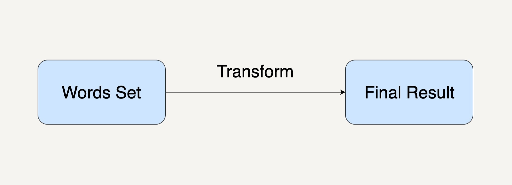
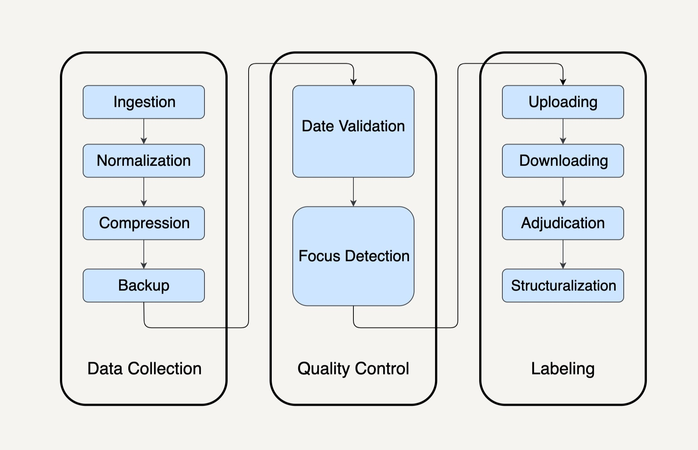
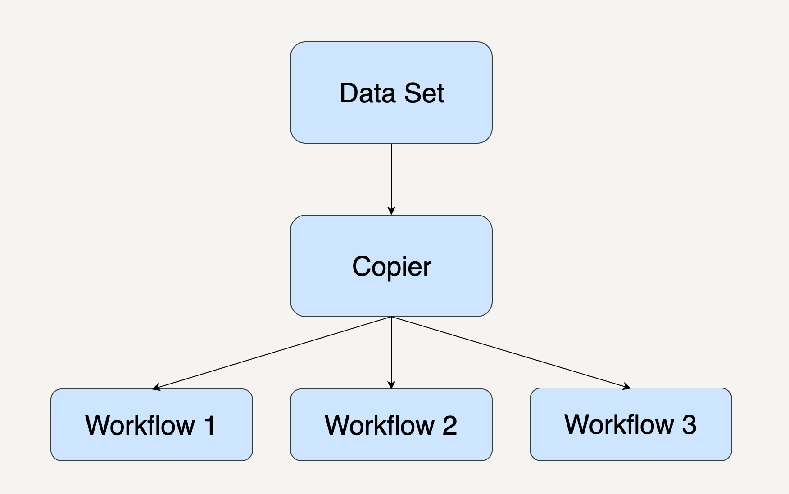
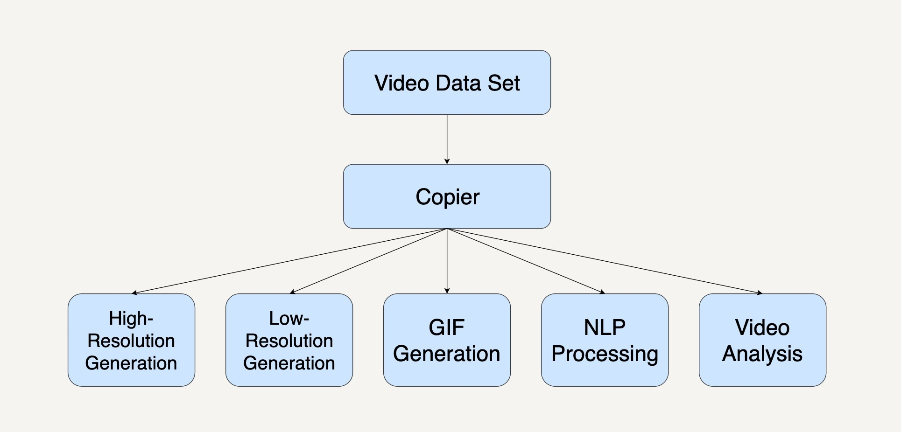
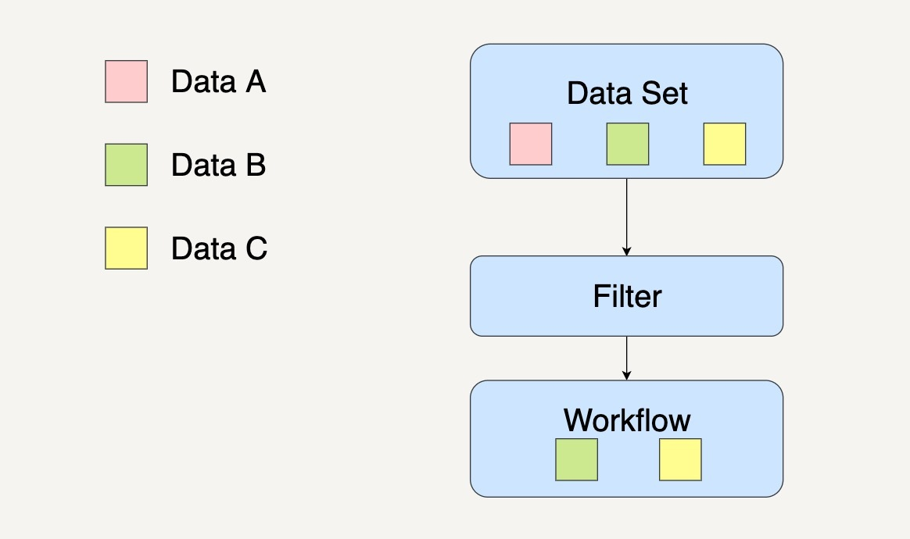
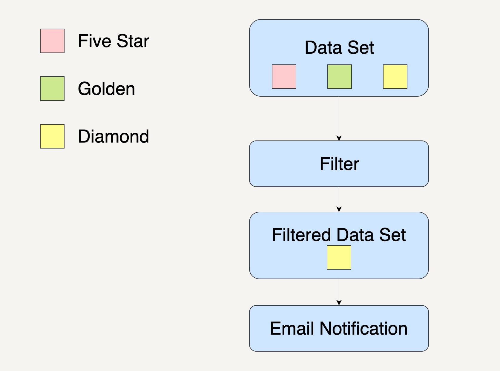
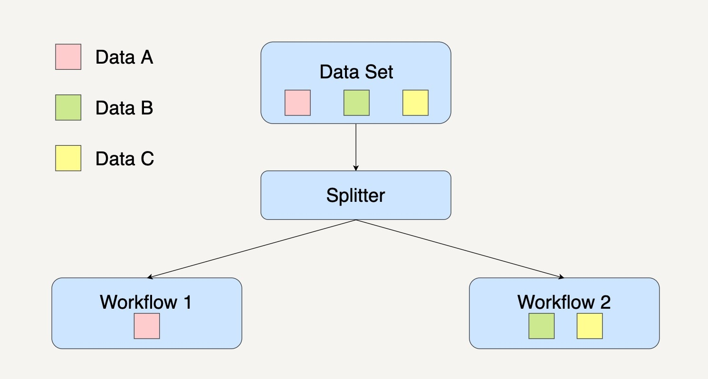
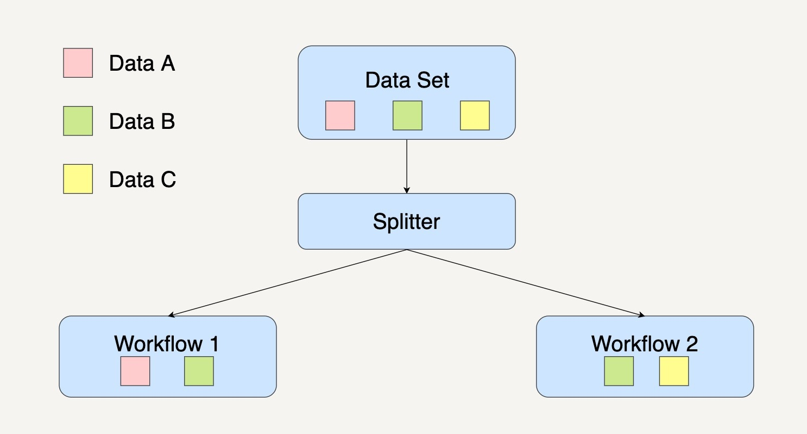
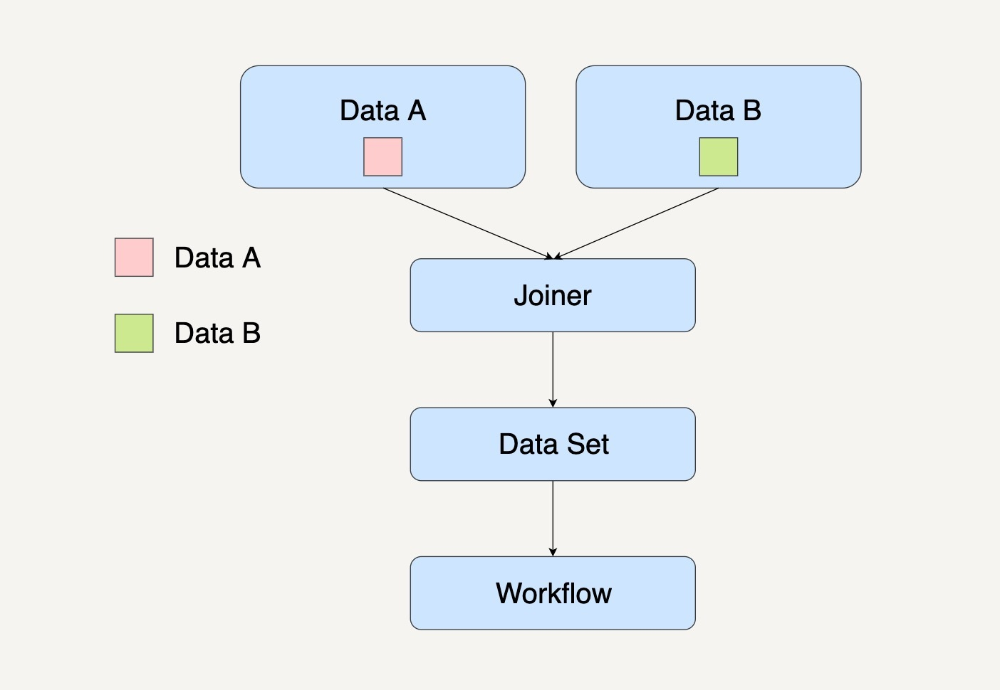

- 00 开篇词 从这里开始，带你走上硅谷一线系统架构师之路.md
- 01 为什么MapReduce会被硅谷一线公司淘汰？.md
- 02 MapReduce后谁主沉浮：怎样设计下一代数据处理技术？.md
- 03 大规模数据处理初体验：怎样实现大型电商热销榜？.md
- 04 分布式系统（上）：学会用服务等级协议SLA来评估你的系统.md
- 05 分布式系统（下）：架构师不得不知的三大指标.md
- 06 如何区分批处理还是流处理？.md
- 07 Workflow设计模式：让你在大规模数据世界中君临天下.md
- 08 发布_订阅模式：流处理架构中的瑞士军刀.md
- 09 CAP定理：三选二，架构师必须学会的取舍.md
- 10 Lambda架构：Twitter亿级实时数据分析架构背后的倚天剑.md
- 11 Kappa架构：利用Kafka锻造的屠龙刀.md
- 12 我们为什么需要Spark？.md
- 13 弹性分布式数据集：Spark大厦的地基（上）.md
- 14 弹性分布式数据集：Spark大厦的地基（下）.md
- 15 Spark SQL：Spark数据查询的利器.md
- 16 Spark Streaming：Spark的实时流计算API.md
- 17 Structured Streaming：如何用DataFrame API进行实时数据分析_.md
- 18 Word Count：从零开始运行你的第一个Spark应用.md
- 19 综合案例实战：处理加州房屋信息，构建线性回归模型.md
- 20 流处理案例实战：分析纽约市出租车载客信息.md
- 21 深入对比Spark与Flink：帮你系统设计两开花.md
- 22 Apache Beam的前世今生.md
- 23 站在Google的肩膀上学习Beam编程模型.md
- 24 PCollection：为什么Beam要如此抽象封装数据？.md
- 25 Transform：Beam数据转换操作的抽象方法.md
- 26 Pipeline：Beam如何抽象多步骤的数据流水线？.md
- 27 Pipeline IO Beam数据中转的设计模式.md
- 28 如何设计创建好一个Beam Pipeline？.md
- 29 如何测试Beam Pipeline？.md
- 30 Apache Beam实战冲刺：Beam如何run everywhere_.md
- 31 WordCount Beam Pipeline实战.md
- 32 Beam Window：打通流处理的任督二脉.md
- 33 横看成岭侧成峰：再战Streaming WordCount.md
- 34 Amazon热销榜Beam Pipeline实战.md
- 35 Facebook游戏实时流处理Beam Pipeline实战（上）.md
- 36 Facebook游戏实时流处理Beam Pipeline实战（下）.md
- 37 5G时代，如何处理超大规模物联网数据.md
- 38 大规模数据处理在深度学习中如何应用？.md
- 39 从SQL到Streaming SQL：突破静态数据查询的次元.md
- 40 大规模数据处理未来之路.md
- FAQ第一期 学习大规模数据处理需要什么基础？.md
- FAQ第三期 Apache Beam基础答疑.md
- FAQ第二期 Spark案例实战答疑.md
- 加油站 Practice makes perfect！.md
- 结束语 世间所有的相遇，都是久别重逢.md
07 Workflow设计模式：让你在大规模数据世界中君临天下
你好，我是蔡元楠。
今天我要与你分享的主题是“Workflow设计模式”。
在上一讲中，我们一起学习了大规模数据处理的两种处理模式——批处理和流处理。
利用好这两种处理模式，作为架构师的你就可以运筹帷幄，根据实际需求搭建出一套符合自己应用的数据处理系统。
然而，光是掌握了这两种数据处理模式就足够自如应对大规模数据世界中的需求挑战吗？从我的实战经验中看来，其实未必。
我们每个人在最开始学习大规模数据处理的时候，可能都是以WordCount作为教学例子来进行学习的。
WordCount这个例子，只需要一个单词集合作为输入，数据处理的结果是统计单词出现的次数，中间只需要经过一次数据处理的转换，就如同下图所示。

但在现实的应用场景种中，各式各样的应用需求决定了大规模数据处理中的应用场景会比WordCount复杂很多倍。
我还是以我在第一讲中所提到过的例子来说明吧。
在根据活跃在街头的美团外卖电动车的数量来预测美团的股价这个例子中，我们的输入数据集有可能不止一个。
例如，会有自己团队在街道上拍摄到的美团外卖电动车图片，会有第三方公司提供的美团外卖电动车数据集等等。
整个数据处理流程又会需要至少10个处理模块，每一个处理模块的输出结果都将会成为下一个处理模块的输入数据，就如同下图所示。

像上面的图示一样，我们将这种由多个不同的处理模块连接在一起，最后得出一个自己需要结果的有向无环图（Directed Acyclic Graph/DAG），称为一个工作流系统（Workflow System）。
在工作流系统的每个处理模块里，系统要执行的操作有可能不是单单一个数据转换的操作这么简单。像在上面例子的Ingestion这个模块中，我们需要将多个不同的数据集合并在一起，也需要将不合格的一些图片过滤掉。
如果你用过Apache Spark 1.4以上的版本的话，Spark平台里面的Execution DAG就可以为你展示一个完整的工作流图。
今天，我为你解释四种工作流系统的设计模式，希望你能够很好地理解它们，并运用在自己的数据处理系统设计中。在遇到各种复杂的应用场景的时候能够从容面对。
复制模式（Copier Pattern）
复制模式通常是将单个数据处理模块中的数据，完整地复制到两个或更多的数据处理模块中，然后再由不同的数据处理模块进行处理。工作流系统图通常如下图所示。

当我们在处理大规模数据时，需要对同一个数据集采取多种不同的数据处理转换，我们就可以优先考虑采用复制模式。
我来举个在YouTube视频平台中，系统处理视频数据集的一个例子吧。
我们都知道，视频平台很多时候都会提供不同分辨率的视频。4K或1080P的视频可以提供给网络带宽很高的用户。而在网络很慢的情况下，视频平台系统会自动转换成低分辨率格式的视频，像360P这样的视频给用户。
而在YouTube视频平台中，如果你将鼠标放在视频缩略图上，它会自动播放一段已经生成好的动画缩略图（Animated GIF Thumbnail ）。
不仅如此，在平台的背后，一个视频的数据集可能被自然语言理解（NLP）的数据处理模块分析，用以自动生成视频字幕；还有可能被视频分析的数据处理模块分析，用以产生更好的内容推荐系统。那么，它的整个工作流系统就会如下图所示一样。

我们可以看到，在这个工作流系统中，每个数据处理模块的输入是相同的，而下面的5个数据处理模块都可以单独并且同步地运行处理。
过滤模式（Filter Pattern）
过滤模式的作用是过滤掉不符合特定条件的数据。
在数据集通过了这个数据处理模块后，数据集会缩减到只剩下符合条件的数据。工作流系统图通常如下图所示。

当我们在处理大规模数据时，需要针对一个数据集中某些特定的数据采取数据处理时，我们就可以优先考虑采用过滤模式。
我举个商城会员系统的例子来解释吧。
在商城会员系统中，系统通常会根据用户的消费次数、用户消费金额还有用户的注册时间，将用户划分成不同的等级。
假设现在商城有五星会员（Five-stars Membership）、金牌会员（Golden Membership）和钻石会员（Diamond Membership）。
而系统现在打算通过邮件，只针对身份是钻石会员的用户发出钻石会员活动邀请。这个时候，我们就可以通过过滤模式，将钻石会员的用户从所有用户中筛选出来，如下图所示。

在这个工作流系统中，一个数据处理模块会将输入的数据集过滤成符合条件的数据，然后传输到下一个数据处理模块进行单独处理。
分离模式（Splitter Pattern）
如果你在处理数据集时并不想丢弃里面的任何数据，而是想把数据分类为不同的类别来进行处理时，你就需要用到分离模式来处理数据。它的工作流系统图通常如下图所示。

需要注意的是，分离模式并不会过滤任何数据，只是将原来的数据集分组了。
还是以刚刚商城会员系统为例。假设现在商城有五星会员、金牌会员和钻石会员。
系统现在打算通过邮件，针对全部的会员用户发出与他们身份相符的不同活动的邀请。
这个时候，我们就可以通过分离模式将用户按照会员等级分组，然后发送相应的活动内容，如下图所示。

需要注意的是，在分离模式下，同样的数据其实是可以被划分到不同的数据处理模块的。

数据B是可以同时划分到工作流1和工作流2中。其实这种情况挺常见的，我可以给你举个例子来解释。
在银行系统上，用户可以通过勾选以短信通知或者以邮件通知的方式来提醒用户一笔交易成功。如果用户同时勾选了短信和邮件两种方式，那么属于这个用户的交易信息既会通过短信通知的数据处理模块来处理，也会通过邮件通知数据处理模块来处理。
合并模式（Joiner Pattern）
合并模式会将多个不同的数据集转换集中到一起，成为一个总数据集，然后将这个总的数据集放在一个工作流中进行处理。

还是以根据活跃在街头的美团外卖电动车的数量来预测美团的股价这个例子来说吧。
数据接入这一处理模块里，我们的输入数据有自己团队在街道上拍摄到的美团外卖电动车图片和第三方公司提供的美团外卖电动车图片。
如果我们打算先整合所有数据，然后进行其它数据处理的话，工作流系统图通常如下图所示。

小结
今天我们一起学习了在大规模数据处理中用到的四种设计模式，分别是复制模式、过滤模式、分离模式和合并模式。
在设计大规模数据处理系统的时候，我们都希望能事先设计好一个工作流系统图出来作为参考。
有了这样一个大规模数据处理的整体蓝图之后，对于我们理解不同的处理模块是如何相互关联或者对未来优化系统设计是有很大帮助的。
思考题
在一个航空预定系统中，我们需要处理用户注册、购买机票和出行前24小时的提醒等功能。在这整个过程中，系统的数据处理运用了哪几个设计模式呢？
欢迎你把文章分享给你的朋友。
© 2019 - 2023 Liangliang Lee. Powered by gin and hexo-theme-book.